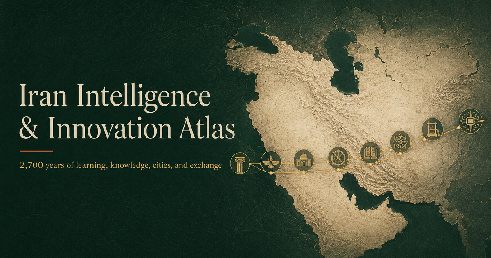

Historical record
Periods, events, scholars, places and source links with explicit evidence limits.
Iran Knowledge Atlas is an exploratory System Dynamics research platform examining how knowledge can accumulate, move, face disruption, and recover across Iranian and Persianate history. The v0.8 program now combines historical evidence, reconstruction, scenario experiments, numerical diagnostics, and robustness analysis.

v0.8 Research Lab · experiments · numerical methods · robustness architecture
The interface deliberately separates different kinds of claims so documentary sources, historical reconstruction and forward experiments are not visually or conceptually conflated.
Periods, events, scholars, places and source links with explicit evidence limits.
Normalized Knowledge Capital and Realized Knowledge Capability outputs conditional on proxy coding and assumptions.
Named forward scenarios with published trajectories and structural ranges.
Euler/RK4 comparison, finer time steps, event timing, clipping diagnostics and reproducibility metadata.
Policy timelines, scheduled shocks, flow decomposition, saved-run comparison and experiment bundles.
Seeded parameter-assumption ensembles, percentile fan charts, threshold summaries and Morris global screening.
An optional Recovery Capacity stock adds rebuilding and renewal feedbacks while preserving the two-stock baseline for structural comparison.
Stage 4 is implemented, and Stage 5–6 foundations are now in place. Quantitative calibration, the gateway-geography extension, and publication/review remain the next research milestones.
An optional Knowledge Infrastructure / Recovery Capacity stock now supports explicit baseline-vs-recovery structural comparison while the two-stock baseline remains preserved.
Observation equations, candidate indicator families, train/validation safeguards, and simple held-out benchmarks are now implemented; exact quantitative series still need audited ingestion before calibration.
Migration is now separated into local loss, relocation, diaspora exchange, and return/reconnection mechanisms. Only local loss remains active; unsupported diaspora feedbacks are deliberately not parameterized.
Exchange opportunity and strategic exposure are separated under a closed evidence gate while dated historical GIS/network measures are still being developed.
A machine-readable readiness matrix tracks submission blockers, evidence coverage, reproducibility, manuscript assets and external review. Publication causal-loop and stock-flow figures are now complete; the submission gate remains closed.
The website presents reviewed historical material, selected reconstructed outputs, published experiment trajectories and generic presentation features. Detailed implementation artifacts are maintained separately from this browser release.